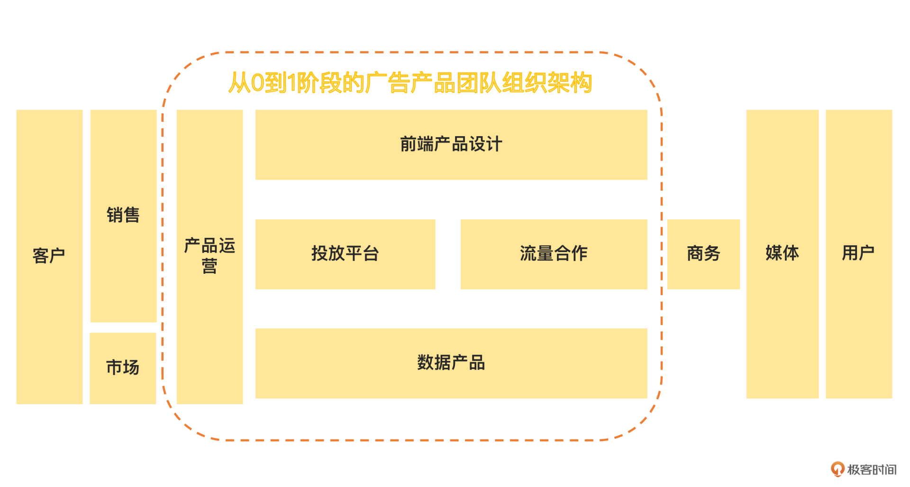
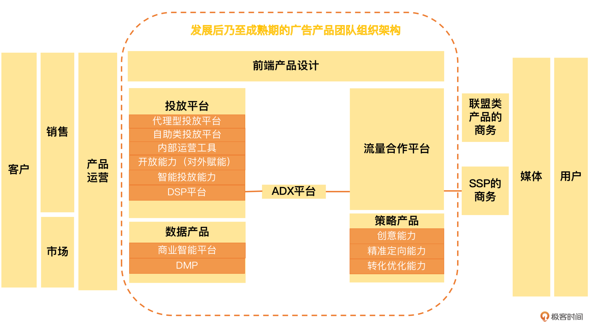
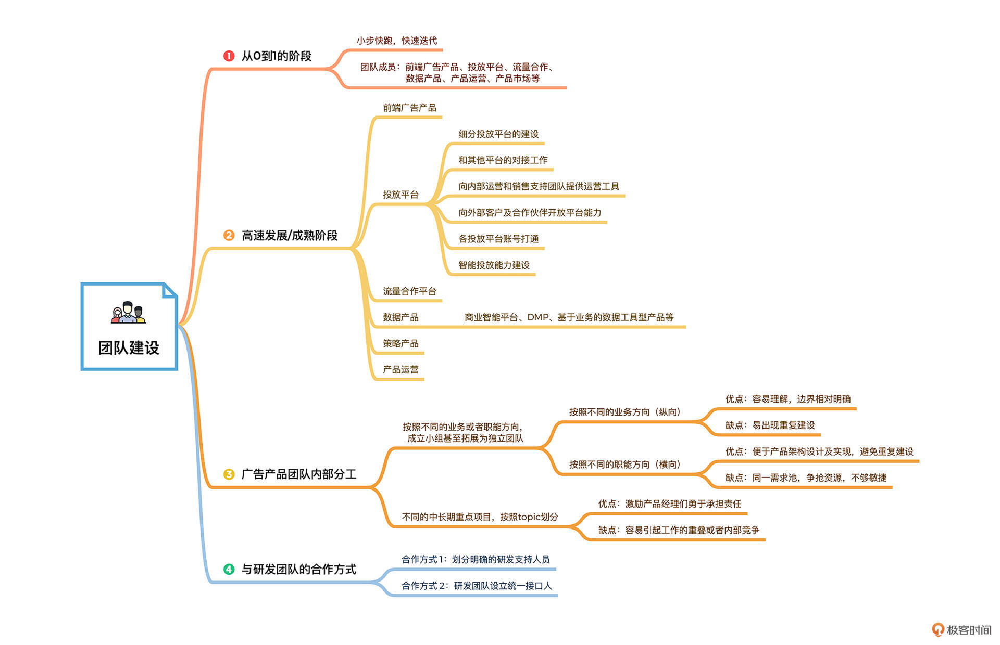

- 00 开篇词 作为一名互联网人，你为什么必须了解广告产品？.md.html
- 01 业务逻辑：广告产品的前世今生和商业模式是怎样的？.md.html
- 02 业务链条：广告主、媒体、第三方等分别如何看待广告产品？.md.html
- 03 头部玩家：从BAT到跳动的字节，广告产品有哪些变化与发展趋势？.md.html
- 04 产品体系：互联网大厂的广告产品存在哪些共性和区别？.md.html
- 05 变现模式：什么样的产品适合采用广告模式变现？.md.html
- 06 产品路线：大厂和小厂的广告产品发展路线有什么区别？.md.html
- 07 计价与效果（上）：如何制定合理的计价方式？.md.html
- 08 计价与效果（下）：如何制定合理的效果评估指标？.md.html
- 09 效果优化：如何一步步从提升曝光量深入到提升销量？.md.html
- 10 流量优化：如何兼顾广告收入和用户体验？.md.html
- 11 物料生产：如何满足广告主的创意需求？.md.html
- 12 精准定向：如何建立一个成熟的用户标签体系？.md.html
- 13 转化优化：互联网大厂如何利用算法优化广告效果？.md.html
- 14 程序化交易：程序化交易是否可以提升广告效果？.md.html
- 15 需求调研：广告产品潜在需求的调研流程是怎样的？.md.html
- 16 平台建设：如何从0到1建立一个完整的广告产品平台？.md.html
- 17 职业发展：新人入行，如何判断自己是否适合做广告产品？.md.html
- 18 团队建设：如何搭建一个高效的广告产品团队？.md.html
- 19 跨团队合作：产研团队和销售端、媒体端、市场端如何合作？.md.html
- 20 产品运营：不同发展阶段如何制定业务目标和运营策略？.md.html
- 21 广告产品彩蛋：课程答疑与推荐书目.md.html
- 结束语 你想要成为什么样的互联网广告产品人？.md.html
- 捐赠
18 团队建设：如何搭建一个高效的广告产品团队？
你好，我是郭谊。
广告产品团队，是广告业务部门的核心团队，也是广告产品成功与否的关键团队之一。在上一讲中，我提到过，广告产品团队内部还有很多不同的分工。我们应该如何搭建一个高效靠谱的广告产品团队？广告产品团队内部不同角色之间是什么样的合作关系？和研发团队之间又是怎么合作的呢？
在这一讲中，我将带你了解并解答以上的问题。希望通过本讲的学习，你可以在商业可行性报告或者业务规划中，快速组建一个可用的广告产品团队，也可以在日常工作中，有理有据地争取更多的人力资源支持。
从0到1阶段的广告产品团队
在一个广告产品从0到1的阶段，广告产品团队就像一个内部的创业公司或者小小的独立事业部。就像当年我加入百度富媒体广告网络产品团队的时候，我们的产品才刚刚上线。当时我们团队一共只有不到10人，只是百度联盟产品大团队中的一个小组。我们组内既有工作多年的老手，也有刚毕业的应届生，分工负责的方向包括：前端广告产品、投放平台、流量合作、数据产品、产品运营、产品市场等。可谓麻雀虽小，五脏俱全。
所以，从0到1的阶段，你的广告产品团队可以参考以下的人员配置：

- 前端广告产品：1-2人，负责设计及上线移动互联网前端广告产品，包括我们讲过的开屏广告、原生广告，还有历史悠久的横幅广告等。
- 投放平台：1-2人，负责设计及上线广告产品的核心平台——广告投放平台。如果你们的主要产品是ADX、DSP、联盟广告等，那就替换成对应的平台即可。如果你们做的是代理型投放平台，那负责投放平台的同事也要负责和客户关系管理平台、合同系统等销售类平台的对接。
- 流量合作：1人，负责联盟类产品或者程序化交易产品的媒体侧接入。一开始你们可以不做流量侧的平台，只要给合作媒体提供靠谱的接入方案即可。
- 数据产品：1-2人，负责建立产品的数据指标体系、设计及上线投放平台中的数据报表模块、通过数据分析监控产品健康度并提供产品和运营优化建议等。这个阶段，数据产品经理可以兼任策略产品经理，以后再做分工。
- 产品运营：2-3人，负责和销售团队对接，提供产品解决方案、产品培训、客户支持等。这个阶段产品还不成熟，不能直接扔给销售团队就不管了。你甚至需要随销售团队去拜访客户，一方面推介产品，一方面可以快速得到客户反馈，回来优化产品。在客户支持上，产品运营可以按照片区例如华北、华东、华南区分，也可以按先来后到的顺序轮流进行跟进。产品运营还需要兼任产品市场的工作，负责和市场团队接口，推动产品市场口碑的建立。
进入发展阶段乃至成熟阶段的广告产品团队
等到百度PC富媒体广告网络产品被市场接受，站稳脚跟之后，百度联盟产品大团队就把我们组分成了产品设计和产品运营两个方向，分别与网盟广告的产品设计和产品运营团队进行合并。我们的产品解决方案也开始往囊括富媒体广告和原有网盟广告的整合投放方向去了，而我这段时间也开始负责这个重点项目的相关管理和团队管理工作。
进入产品快速成长阶段，你的广告产品团队可以参考以下的人员配置。因为到了这个阶段，大家的业务方向和组织架构区别都会越来越大，所以我不再列出建议人数，请你根据你们业务的具体情况决定。

- 前端产品设计：这个阶段，我们需要开始探索更加新锐和复杂的前端广告产品样式及策略了，例如我们前面讲过的激励视频产品等。还有一些针对具体行业客户推出的广告产品，比如针对汽车行业推出的销售线索收集类的广告产品；针对游戏行业推出的边看广告边下载App类的广告产品；针对电商行业推出的商品橱窗类广告产品（结合精准定向、动态创意、DMP等多种技术能力）等等。在前端产品设计方向上，你可以根据主要的产品类型规划及重点行业，来决定在岗人数。
- 投放平台：发展到这个阶段投放平台的工作会变得越来越复杂。因为你不仅要增加新的功能模块，迭代原有的功能模块，还要跟进以下工作：
- 细分投放平台的建设：例如我们自有的DSP平台，因为和投放端关系紧密，所以往往是由属于投放平台方向的产品经理来一并承接；
- 和其他平台的对接工作：例如我们自有的DSP平台、商业智能平台、DMP等；
- 向内部运营和销售支持团队提供运营工具：例如客户希望能够看到联盟广告的广告位截图，而联盟广告是CPC实时竞价的，不是通过固定位置展现广告的，合作媒体又可能不通知我们就修改展现位置，但是这一点很难得到所有客户的理解，尤其是一些客户的大老板。所以我们就要给销售团队提供广告位截图工具，以便他们可以向客户交差。
- 向外部客户及合作伙伴开放平台能力：例如前面提到过的Marketing API、RTA等，都需要独立进行产品设计并集成SDK等。内部的运营工具，我们也会在成熟的时候，考虑对外部开放一部分，这都需要重新设计和封装；
- 各投放平台账号打通：以我在百度经历过的一个历时数年的项目为例，最初需求来自客户希望把百度搜索关键词广告和百度网盟广告中的预算进行自由调动，但是两边投放平台是两个客户账号体系。因此，投放平台的同事想统一两个投放平台的账号。没想到一调研才发现其他规模较小的广告产品也做了自己的投放平台，而且账号都没有打通，所以就变成了一个叫做“一站式”的内部大项目。当然，我希望你们能够提前规划，规避这种情况。
- 智能投放能力建设：在投放平台发展到更加成熟的阶段，就要开始整合各种能力，寻求以算法取代人工，进一步提升投放效率的方式。这个产品化过程就叫做智能投放能力建设，也是由投放平台的产品经理负责跟进。这个阶段的工作完成之后，投放平台产品经理的基础建设工作才告一段落，可以腾出更多的精力放到新的工作上。
- 流量合作平台：这个阶段，你们需要建立起流量合作侧的平台，为合作媒体提供我们在第16讲提到过的注册认证、流量接入、流量变现、分成结算及数据呈现等能力。另外，负责流量合作的产品经理还需要对接和支持商务团队。如果你们打算建设自己的SSP，一般也可以由这个方向的产品经理同事来承接。
- 数据产品：这个阶段，数据产品经理除了继续完善产品指标体系之外，工作的重点转移到通过产品化的方式，提升数据驱动业务的能力。产品化的体现包括我们前面说过的商业智能平台、DMP等，还包括很多基于业务的数据工具型产品。
例如我在阿里妈妈的时候，我们销售策划提案时，需要了解搜索了客户品牌和产品词的用户还搜索了其他哪些词，所以就要为他们开发词云工具。数据分析团队需要了解用户在客户店铺中的全链路转化数据，我们就要建设这样的全链路数据后台，而不能局限于传统的广告产品数据指标。
- ADX平台：我们在前面说过，一线大厂成熟的产品矩阵包括直投类产品、联盟类产品和程序化交易产品。程序化交易产品中的DSP、SSP、DMP等可以分别由负责投放平台、流量合作平台和数据产品的产品经理同事承接。但是，ADX一般需要成立独立的团队。ADX要对接很多外部的DSP和SSP，因此必须保持一定的独立性和客观性。除了产品经理之外，ADX的运营和商务也是相对独立的，主要针对的是外部的DSP合作伙伴。
- 策略产品：随着广告产品的发展及成熟，产品策略对于业务的提升作用越来越明显，策略产品经理的岗位也随之增加。广告策略产品经理负责的方向包括创意及着陆页生产及优化能力建设、动态创意能力建设、用户标签体系及精准定向能力建设、转化优化能力建设等。
- 产品运营：一般来说，这时候产品运营已经合并到产品运营大团队中，或者独立出去了。但是，广告产品即使进入了成熟期，也有可能存在产品运营方向的岗位。这是因为随着产品越来越复杂，需要更加了解产品的运营人员来产出产品解决方案；另一方面，归属于产品团队的产品运营人员，可以更顺畅地向产品经理输送新的需求。因此，实际情况中，很多处于成长期甚至成熟期的广告产品团队中还是会有兼任或者完全属于产品运营方向的同事。
进入到成熟期的广告产品团队，必然会开始寻找新的广告产品方向。因此，团队中又会分出一部分人力，或者开始招聘新的同事，开始一个或者多个并行的、从0到1的广告产品小事业部的征程。
俗话说：“天下大势，合久必分，分久必合。”广告产品团队的组织架构，随着产品发展的不同阶段，以及管理层的人事变迁，会不断发生变化。我们要敞开心胸，拥抱变化，从中抓住业务提升与个人发展的契机。
广告产品团队如何达成高效的内部合作
在从0到1的阶段，广告产品内部的组织结构是非常扁平化的，所有成员直接向团队leader汇报即可。但是随着产品的发展，广告产品团队的分工越来越细化，人员也越来越多，那么，团队内部怎样才能继续高效地合作呢？
在一线大厂中，我们主要采取两种方式：
- 按照不同的业务或者职能方向，成立小组甚至拓展为独立团队。
- 按照不同的业务方向：这种产品团队的划分方法，我把它叫做“纵向”的划分方法。例如，百度广告产品在很长一段时间内，就是按照搜索关键词广告、品牌专区、联盟广告、程序化交易、非标准广告等不同的业务方向进行划分的。纵向划分方式的优点是容易理解，边界相对明确；缺点是如果一开始缺乏统一规划，会出现很多重复建设，例如前面提到的多个投放平台及账号未打通这种情况。
- 按照不同的职能方向：这种产品团队的划分方法，我把它叫做“横向”的划分方法。例如，百度广告产品后来把展示广告的投放平台统一到一个产品团队负责，其他按照业务方向划分的产品团队主要负责前端产品样式设计等工作。又比如腾讯广告除了投放平台外，把数据产品和策略产品也统一划分到一个产品团队负责。横向划分方式的优点是便于进行自上而下的产品架构设计及实现，避免重复建设；缺点是各个细分产品线的需求都要在一个需求池中争取开发及其他资源的支持，有时候不够敏捷。
因此，在大厂中，我们经常采取纵横结合的方式，并且根据广告产品业务发展的需求进行灵活调整。
- 不同的中长期重点项目，按照topic（工作主题）划分。
例如在我参与百度移动展示广告产品及运营时期，我们的团队就是按照topic进行划分的。我负责的topic里有一个就是展示广告和作为着陆页的百度直达号的整合营销；又比如在阿里妈妈工作期间，我除了自身工作之外，又负责了一个类似的跨部门重点项目，就是品牌号的商业化。那我就是这些重点项目的topic leader。
topic leader的专业职级不一定高于成员，在美团等大厂内部也曾出现过倒挂的情况，例如P6担任topic leader，组员有P6+甚至P7。因为这些topic都是中长期项目，所以有可能持续超过一年甚至更长的时间。
这种方式尤其容易出现在一些发展得较为成熟的业务中。它的优点是可以激励产品经理们勇于承担责任，缺点是因为不像第一种划分方式那么明确，所以有可能引起一些工作的重叠或者内部竞争。这种竞争如果控制不当，就会出现所谓的“内卷”现象。
在一个成熟的广告产品团队内部，以上两种分类方式经常是同时使用的。纵横交错再加上topic leader的存在，形成了一个复杂的业务矩阵。如何平衡业务目标、人员效能及产品经理的个人成长，对于广告产品团队的管理者来说，是一个复杂的问题。所谓“治大国若烹小鲜”，管理者不能放手不管，也不能事必躬亲，要善于放权，拥抱变化，见招拆招，才能在不断变化的业务与组织架构变迁中，推动广告产品健康发展。
广告产品团队和研发团队如何达成高效的合作
在产品的生产环节中，产品团队和研发团队的合作是最核心的环节。因此，我们还需要了解一下产品团队和研发团队的内部合作方式。
在绝大部分情况下，研发团队是产品团队的被需求方。在一线大厂中，我们通常通过两种方式和研发团队进行对接：
第一种方式：为每个产品团队乃至小组划分明确的研发支持人员，直接进行接口。在一些重大的长期产品建设中，我们会采取这种方法。例如，投放平台产品一般都会有明确的主力研发人员支持。如果研发人力充足，采用这种方法无疑是最好的。但是，事实上，广告产品的迭代需求是无穷无尽的，成熟的广告产品团队内部更是如此。所以，在现实中，我们经常要配合使用第二种对接方式。
第二种方式：研发团队设立统一接口人，负责产品需求的对接及研发人力的分配。例如，我在百度网盟工作的时候，研发团队就有一位同事长期兼任这种接口人角色，相当于是研发团队内部的项目经理。这种方式的好处是有利于统一分配研发资源，而且可以对研发人力进行精细化运营，让同一个研发同事可以同时支持多个细分产品线的需求；缺点是相对第一种方式而言，可能会让研发缺乏对于同一个产品线的开发历史的了解。因此，我们要强调代码注释的普及，做好项目过程资料的留存管理，还要及时沉淀项目经验。
重点回顾
在这一讲中，我为你介绍了如何搭建一支高效的广告产品团队。

在产品从0到1的阶段，广告产品功能尚未完善，重点是要小步快跑，快速迭代，并且加强对各个业务团队的支持。因此，这时候的广告产品团队，分工比较粗放，但是职责范围比较大。除了前端广告产品设计、投放平台、流量合作、数据产品等长期方向外，还要承担一大部分产品运营甚至销售支持的工作。
在产品度过了从0到1的阶段，进入高速发展阶段乃至成熟阶段之后，广告产品的基本功能已经完善，重点在于分工明确，职责到人。因此，这时候的广告产品团队，会把产品运营的职责放给独立的产品运营、销售支持等更贴近业务的团队，集中精力在产品迭代上。这个阶段，除了从0到1阶段的方向之外，还增加了策略产品、程序化交易产品等细分方向，并且原有的各个方向也划分得越来越细，争取把各种产品能力都建设到极致。
广告产品团队内部有两种主要的分工方式，一种是按照业务或者职能方向进行分工，另一种是按照中长期的重点项目进行分工。这两种分工方式各有优劣，所以没有绝对的正确，我们可以根据业务和组织架构的需求进行组合和变化。
广告产品团队和研发团队之间也有两种主要的合作方式，一种是按照细分产品线或者项目指定固定的研发人力，另一种是通过统一的研发团队接口人进行研发人力分配。在实际工作中，我们经常是两种方式相结合。
关于具体怎么去搭建团队，你就需要根据我们今天学习的内容，再结合公司的实际情况，灵活处理。
实战演练
请你根据自己公司的广告产品业务需求，绘制一张广告产品团队的分工图，并说明各个岗位的工作职责及所需人数。如果你们公司暂时没有这方面的需求，可以以你感兴趣的广告产品平台作为假想对象，来完成作业。相信这样一份作业对你的业务规划、述职或者面试，都会大有帮助！
欢迎你在评论区留下你的答案与我讨论，也欢迎你把这节课分享给需要的朋友。我们下节课再见！
© 2019 - 2023 Liangliang Lee. Powered by gin and hexo-theme-book.